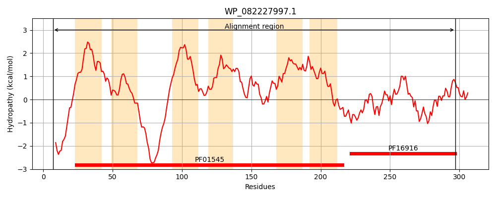
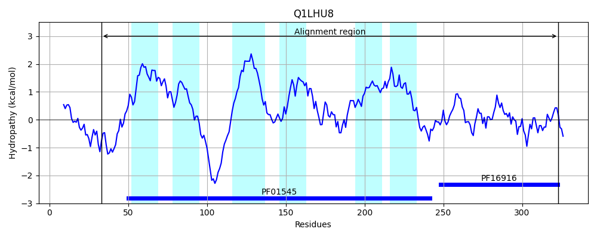
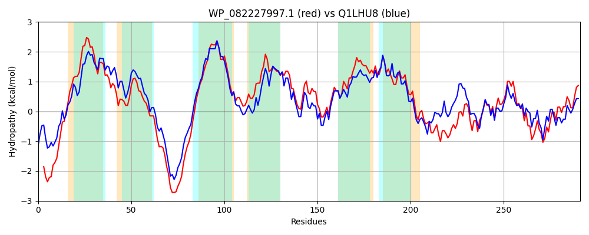

Hit Accession: Q1LHU8
Hit TCID: 2.A.4.7.9
Hit Description: gnl|BL_ORD_ID|13016 gnl|TC-DB|Q1LHU8|2.A.4.7.9 Cation Diffusion Factor, metal efflux system component OS=Cupriavidus metallidurans (strain ATCC 43123 / DSM 2839 / NBRC 102507 / CH34) GN=fieF PE=3 SV=1
Mach Len: 291
e:0.000000
Query TMS Count : 6
Hit TMS Count: 6
TMS-Overlap Score: 5.250000
Predicted Substrates:CHEBI:3290;cadmium(2+), CHEBI:23337;cobalt(2+), CHEBI:34754;iron(2+), CHEBI:25517;nickel(2+), CHEBI:10113;zinc(2+)
BLAST Alignment:
Score: 851 , Bit scores: 332 bits, E-value: 7.9e-114, Alignment length: 291, Percentage identity: 56
Query: 7 ENDNKYHERSMQARKSTLISVVVNIFLSVFQVVVGIFSGSQGLIADGMHSFSDLVADGVVLVANKKSRRPSDHDHHYGHWRYENGASLILGAILVLVGVGMLWSAAGHLAQPQTIPAVHSVALWMALVALAVKEGLFRYMLAAATRLNSSLLIANAWHARSDAASSLVVALGIIGNLAGFAWFDPLAALAVGLLITRMGYRFAATALHDLMDRAVDEETQRAIARTLQATPGVAGLHDLKTRKAGDLVLVDVHLEVAGEMSVAEGHQIARQARERVLAQHPVLNVMVHLDP 297
++D R + R+ST++SV VNI LS+ Q V+GI +GSQ L+AD +HS SDL++D VVL A SR+ +D DH YGH R+E ASL +GA+L+ VGVGMLW+A G + P + V ++A+WMAL AL KE LFRYML A R+ SS+L+ANAWHARSDAASSLVVALG+ GNL G+ DP+AA+ VGL+++R G +F AL DLMDRA DE+T A+ + TPGV GLHDLKTRK GD++LVDVHLE+ +++V +GH IA +A R +A++ VLNVM H+DP
Sbjct: 33 QHDEAARARHLAGRRSTMVSVYVNIALSIAQAVIGIIAGSQALVADALHSLSDLISDFVVLFAGHHSRKDADTDHPYGHQRFETAASLAIGALLLAVGVGMLWAAVGKIQHPNGVQPVQTIAIWMALGALVAKELLFRYMLRVAERIRSSMLVANAWHARSDAASSLVVALGVGGNLLGYHVLDPVAAIVVGLMVSRTGLKFGWDALSDLMDRAADEDTVAALRAAMLETPGVLGLHDLKTRKMGDMILVDVHLEIQADLTVEQGHAIATEAARRAMARNDVLNVMTHVDP 323 | Protein Hydropathy Plots: |
|---|
|  |  |
Pairwise Alignment-Hydropathy Plot:
|
|---|
|  |